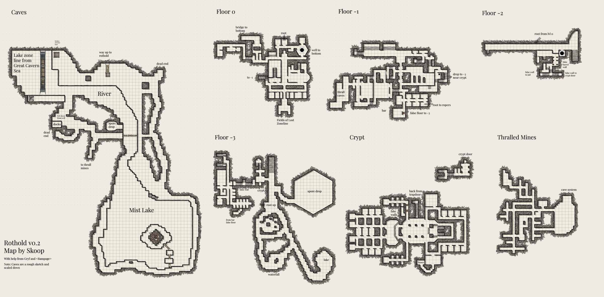

Rothold
This zone is accessible from the western edge of the Great Cavern Sea.
Map

Named mobs
| Named | Lvl | Race / class | Where | Known loot (hover) |
|---|---|---|---|---|
| Thalric Torxid | < 44 | Deep Elf / NEC/SK | Ail'trist Cave | Shadowed Mask |
| a bloodied roper | - | - | Plated Champion's Gauntlets | |
| a destitute chaplain | - | - | Chaplain Pantaloons, Templar Chestplate, Shield of the Destitute | |
| a conscript liason | - | - | Beguiler's Charm | |
| a conscript overseer | - | - | Conduit Gloves, Beguiling Minstrel Staff, Seeker's Silk Mantle | |
| a Valtheris andrapodist | - | Human / cleric | - | Slaver's Band |
| a Valtheris mixologist | - | - | Large Bloodied Pestle, Runed Ward | |
| Watcher Terial | - | Skeleton | - | Well-Tempered Arcane Shiv, Reinforced Champion's Gloves, Gloves of Vigilance |
| Duke Mygdrath | - | - | Dark Elegant Leggings, Helm of Contempt, Loop of Control | |
| Rootmind | - | Myconid | - | Fungal Mail Cap |
| Thrallmaker Syllis | - | - | Seeker's Byrnie, Thrallmaker Shroud | |
| Lord Dorian | - | - | Charm of Nobility, Shadowforged Breastplate, Golden Shroud | |
| Lady Isolde | - | - | Noble Staff, Forged War Pauldrons | |
| charcutier | - | - | Sturdy Cooking Boots | |
| an ancient sanguisuge | - | - | Slayer's Rune Pendant | |
| Prince Ademaar Reims | - | - | Polished Slayer's Girdle, Desperate Royal Greaves |
Mobs & NPCs (camps by level)
Rows with a level are huntable camps; rows without are usually town NPCs or not yet documented.
| Name | Lvl | Race | Class | Where | Notes |
|---|---|---|---|---|---|
| a Valtheris bloodknight | - | - | - | - | |
| a Valtheris bloodmage | - | Human | - | - | |
| a Valtheris champion | - | - | - | - | |
| a Valtheris devout | - | - | Cleric | - | |
| a Valtheris elder | - | - | - | - | |
| a Valtheris illusionist | - | Human | Enchanter | - | |
| a Valtheris night-watch | - | Human | - | - | |
| a Valtheris penitent | - | Human | - | - | |
| a Valtheris phantasmist | - | Human | - | - | |
| a Valtheris priest | - | - | - | - | |
| a Valtheris rake | - | Human | - | - | |
| a blood scribe | - | Deep Elf | Necro | - | |
| a bloodbound brawler | - | Deep Elf | - | - | |
| a bloodbound defender | - | Deep Elf | - | - | |
| a broken acolyte | - | - | - | - | |
| a discarded corpse | - | - | - | - | |
| a downy spoutling | - | - | - | - | |
| a favored aspirant | - | - | - | - | |
| a favored pugilist | - | - | - | - | |
| a favored templar | - | - | - | - | |
| a favored vanguard | - | - | - | - | |
| a flamekeeper | - | - | - | - | |
| a fledgling seer | - | - | - | - | |
| a fungal thrall | - | Vary | - | - | |
| a gelatinous cube | - | - | - | - | |
| a loyal champion | - | - | - | - | |
| a loyal pledge | - | - | - | - | |
| a mutated thrall | - | Vary | - | - | |
| a mycothane | - | - | - | - | |
| a novice hemomancer | - | - | - | - | |
| a root-entangled cube | - | - | - | - | |
| a roper | - | - | - | - | |
| a shrewd spellsayer | - | - | - | - | |
| a thirsting feeder | - | - | - | - | |
| a trusted oathkeeper | - | - | - | - | |
| a trusted oathkeeper | - | - | - | - | |
| a withered corpse | - | - | - | - | |
| an engorged feeder | - | - | - | - | |
| an unworthy pledge | - | - | - | - |
Quests
| Quest | Reward | Giver | Min lvl |
|---|---|---|---|
| Example Quest Name | Example Reward | Example Quest Giver | - |
| Example Quest Name | Example Reward | Example Quest Giver | - |
Gear that drops here
| Slot | Item | Key stats (wiki) | How to get | Lvl | Classes |
|---|---|---|---|---|---|
| Bone Chips | no stats listed on wiki | Quest: Bone Chips for Moon Dances (Moon Dances, Faelindral, min lvl 1) Quest: Bone Chips for Squire Ryland (Squire Ryland, Night Harbor, min lvl 1) Quest: Druid Starter Quest (Faelindral) (Sylvarya Starveil, Faelindral, min lvl 1) Quest: Find Delilah's Pet (Delilah, Underdocks, min lvl 1) | 1 | NEC SHD | |
| Primary, Secondary | Torch | Effect: Torch (Passive. Must Equip. Level: 1) | Quest: Pests at the Farm (Farmer Ammar, Night Harbor, min lvl 1) Vendor: A goods merchant — Night Harbor, Shallow Shoals; A greedy halfling — Night Harbor; A shifty elf — Evershade Weald Crafted: Survival (trivial X) Drop: A rotting skeleton (lvl 1) — Night Harbor, Noob Yard | 1 | All classes |
| Secondary | Worn Ironbark Buckler | AC 10 | Drop: a Plagueborn knight (lvl ~42-44) — Fallen Pass, Western Beach Shrine, Elder Drake area Drop: a Plagueborn worshipper (lvl ~36-37) — Fallen Pass, Undead Citizens Drop: a Plagueborn veteran (lvl ~42-44) — Fallen Pass, Elder Drake area Drop: a dusty skeleton (lvl -) — Fallen Pass, - | 17 | BRD BST CLR DRU FTR INQ PAL RNG ROG SHD SHM SPB |
| Primary, Secondary | Rusty Steel Mace | DMG 13 / DLY 40 | Drop: a decaying drunk (lvl unconfirmed) — Glass Flats Drop: a fallen warden (lvl unconfirmed) — Glass Flats Drop: a herald (lvl unconfirmed) — Glass Flats Drop: an abyssal emissary (lvl ~48-50) — Glass Flats, - | 20 | BRD BST CLR DRU FTR INQ MNK PAL RNG ROG SHD SHM SPB |
| Primary, Secondary | Cracked Ironbark Staff | DMG 9 / DLY 33 | Drop: a poacher (lvl ~28-30) — Keeper's Bight, - Drop: a poacher bruiser (lvl 28-30) — Keeper's Bight, Poacher Camp, Bear Cave Drop: a poacher pathfinder (lvl 28-30) — Keeper's Bight, Poacher Camp, Bear Cave Named drop: Poacher Garrus (lvl >35) — Keeper's Bight, Poacher Camp | 27 | All classes |
| Feet | Rusty Iron Chain Boots | AC 10 | Drop: a Witchguard oracle (lvl unconfirmed) — Shallow Shoals Drop: a Witchguard veles (lvl unconfirmed) — Shallow Shoals Drop: a Witchguard sacramir (lvl ~39+) — Shallow Shoals, Black Shoals Fortress Drop: a treant (lvl 38) — Glinting Hollow, - | 27 | BRD CLR FTR INQ PAL RNG ROG SHD SHM |
| Shirt | Rusty Iron Chain Gambeson | no stats listed on wiki | Drop: a poacher (lvl ~28-30) — Keeper's Bight, - Drop: a poacher bruiser (lvl 28-30) — Keeper's Bight, Poacher Camp, Bear Cave Drop: a poacher pathfinder (lvl 28-30) — Keeper's Bight, Poacher Camp, Bear Cave Drop: a Valtheris elder (lvl -) — Rothold, - | 27 | BRD CLR FTR INQ PAL RNG ROG SHD SHM |
| Shoulders | Rusty Iron Chain Shoulderguards | AC 13 | Drop: a cultist guard (lvl 44) — Glass Flats, - Drop: a cultist lookout (lvl 43) — Glass Flats, - Drop: a Plagueborn knight (lvl ~42-44) — Fallen Pass, Western Beach Shrine, Elder Drake area Drop: a Plagueborn watchman (lvl ~52-53) — Fallen Pass, Upper Saman | 27 | BRD CLR FTR INQ PAL RNG ROG SHD SHM |
| Waist | Rusty Iron Chain Waistguard | AC 4 | Drop: a Plagueborn citizen (lvl ~36-37) — Fallen Pass, Undead Citizens Drop: a wererat (lvl 31-33) — Fallen Pass, Smuggler Cave Named drop: Demeter Stollen (lvl 44) — Fallen Pass, West Beach Shrine Drop: a Plagueborn patrolman (lvl ~34-36) — Fallen Pass, Undead Citizens | 27 | BRD CLR FTR INQ PAL RNG ROG SHD SHM |
| Primary, Secondary | Rusty Iron Dagger | DMG 6 / DLY 23 | Drop: a corrupted enchantress (lvl unconfirmed) — Shallow Shoals Drop: a Witchguard venator (lvl unconfirmed) — Shallow Shoals Drop: a Witchguard veles (lvl unconfirmed) — Shallow Shoals Named drop: Champion of Muurtu (lvl ~45) — Shallow Shoals, Black Shoals Fortress | 27 | ARC BRD BST ELE ENC FTR INQ NEC RNG ROG SHD SHM SPB WIZ |
| Secondary | Rusty Iron Kite Shield | AC 13 | Drop: a Witchguard cultor (lvl ~39+) — Shallow Shoals, Black Shoals Fortress Drop: a Witchguard veles (lvl unconfirmed) — Shallow Shoals Drop: a Witchguard myrmidon (lvl unconfirmed) — Shallow Shoals Drop: Fizzle Screwtape (lvl -) — Shallow Shoals, Zaedin's Landing | 27 | BRD FTR INQ PAL RNG SHD |
| Primary | Rusty Iron Long Spear | DMG 13 / DLY 48 | Drop: a Witchguard cultor (lvl ~39+) — Shallow Shoals, Black Shoals Fortress Drop: a Witchguard shaman (lvl unconfirmed) — Shallow Shoals Drop: a Witchguard medicus (lvl unconfirmed) — Shallow Shoals Drop: a corrupted adept (lvl unconfirmed) — Shallow Shoals | 27 | ARC BRD BST FTR INQ RNG ROG SHD SHM |
| Primary, Secondary | Rusty Iron Longsword | DMG 10 / DLY 38 | Drop: a flourishing treant (lvl 38) — Glinting Hollow, - Drop: a goblin spiritbinder (lvl unconfirmed) — Shallow Shoals Drop: a Witchguard stalker (lvl unconfirmed) — Shallow Shoals Drop: a craven cultist (lvl -) — Shallow Shoals, Pirate Island | 27 | ARC BRD BST FTR INQ PAL RNG ROG SHD SPB WIZ |
| Primary | Rusty Iron Maul | DMG 18 / DLY 52 | Drop: a Witchguard princeps (lvl ~39+) — Shallow Shoals, Black Shoals Fortress Drop: a Witchguard defiler (lvl unconfirmed) — Shallow Shoals Drop: High Priest of Muurtu (lvl unconfirmed) — Shallow Shoals Drop: a Witchguard cultor (lvl ~39+) — Shallow Shoals, Black Shoals Fortress | 27 | BRD BST CLR DRU FTR INQ MNK PAL RNG ROG SHD SHM SPB |
| Feet | Rusty Iron Plate Boots | AC 12 | Drop: a cultist guard (lvl 44) — Glass Flats, - Drop: a Plagueborn priest (lvl ~42-44) — Fallen Pass, Elder Drake area Drop: a smuggler (lvl unconfirmed) — Fallen Pass Drop: a Plagueborn worshipper (lvl ~36-37) — Fallen Pass, Undead Citizens | 27 | CLR FTR INQ PAL SHD |
| Back | Rusty Iron Plate Cloak | AC 5 | Drop: a cultist lookout (lvl 43) — Glass Flats, - Drop: a crystallized skeleton (lvl ~35-40) — Glass Flats, - Drop: a highwayman prospect (lvl ~31+) — Glass Flats, - Drop: a tormented guardian (lvl unconfirmed) — Glass Flats | 27 | CLR FTR INQ PAL SHD |
| Neck | Rusty Iron Plate Collar | AC 4 | Drop: a headless vacationer (lvl 29-38) — Sunken Resort, - Drop: a Valtheris champion (lvl -) — Rothold, - Drop: a favored vanguard (lvl -) — Rothold, - Drop: a Valtheris devout (lvl -) — Rothold, - | 27 | CLR FTR INQ PAL SHD |
| Hands | Rusty Iron Plate Gauntlets | AC 13 | Drop: a weeping visitor (lvl 29-38) — Sunken Resort, - Drop: Tormented Soul (lvl -) — Fallen Watch, - Drop: a plague-sworn squire (lvl unconfirmed) — Fallen Watch Drop: a zombified rat (lvl 45-60) — Fallen Watch, - | 27 | CLR FTR INQ PAL SHD |
| Head | Rusty Iron Plate Helm | AC 15 | Drop: a Witchguard myrmidon (lvl unconfirmed) — Shallow Shoals Drop: a Witchguard veles (lvl unconfirmed) — Shallow Shoals Drop: a Witchguard serverat (lvl ~39+) — Shallow Shoals, Black Shoals Fortress Drop: a Valtheris elder (lvl -) — Rothold, - | 27 | CLR FTR INQ PAL SHD |
| Primary, Secondary | Rusty Iron Scimitar | DMG 9 / DLY 36 | Drop: a Witchguard cultor (lvl ~39+) — Shallow Shoals, Black Shoals Fortress Drop: a Witchguard defiler (lvl unconfirmed) — Shallow Shoals Drop: a Witchguard venator (lvl unconfirmed) — Shallow Shoals Drop: a Witchguard myrmidon (lvl unconfirmed) — Shallow Shoals | 27 | ARC BRD BST DRU FTR INQ PAL RNG ROG SHD SPB WIZ |
| Primary, Secondary | Rusty Iron Scythe | DMG 8 / DLY 28 | Drop: a Witchguard shaman (lvl unconfirmed) — Shallow Shoals Drop: a Witchguard medicus (lvl unconfirmed) — Shallow Shoals Drop: a Witchguard princeps (lvl ~39+) — Shallow Shoals, Black Shoals Fortress Drop: a Witchguard venator (lvl unconfirmed) — Shallow Shoals | 27 | BST DRU FTR INQ NEC RNG SHD SPB |
| Primary, Secondary | Rusty Iron Spear | DMG 9 / DLY 34 | Drop: a headless vacationer (lvl 29-38) — Sunken Resort, - Drop: a crystallized skeleton (lvl ~35-40) — Glass Flats, - Drop: a road deacon (lvl ~31+) — Glass Flats, - Drop: a Plagueborn knight (lvl ~42-44) — Fallen Pass, Western Beach Shrine, Elder Drake area | 27 | ARC BRD BST FTR INQ RNG ROG SHD SHM |
| Secondary | Rusty Iron Tower Shield | AC 16 | Drop: a Plagueborn worshipper (lvl ~36-37) — Fallen Pass, Undead Citizens Drop: a Plagueborn knight (lvl ~42-44) — Fallen Pass, Western Beach Shrine, Elder Drake area Drop: an assistant jailer (lvl unconfirmed) — Fallen Pass Drop: a Plagueborn watchman (lvl ~52-53) — Fallen Pass, Upper Saman | 27 | FTR INQ PAL SHD |
| Hands | Tattered Cotton Gloves | AC 4 | Drop: a poacher (lvl ~28-30) — Keeper's Bight, - Drop: a poacher bruiser (lvl 28-30) — Keeper's Bight, Poacher Camp, Bear Cave Drop: a poacher herbalist (lvl 28-30) — Keeper's Bight, Poacher Camp Named drop: Seamas Growt (lvl ~38+) — Fallen Pass, Pillars(wanders) | 27 | All classes |
| Neck | Tattered Cotton Gorget | AC 3 | Named drop: Poacher Garrus (lvl >35) — Keeper's Bight, Poacher Camp Drop: a poacher (lvl ~28-30) — Keeper's Bight, - Drop: a treant (lvl 38) — Glinting Hollow, - Drop: a cultist guard (lvl 44) — Glass Flats, - | 27 | All classes |
| Waist | Tattered Leather Belt | AC 3 | Drop: a cultist guard (lvl 44) — Glass Flats, - Drop: a Witchguard venator (lvl unconfirmed) — Shallow Shoals Drop: a Witchguard myrmidon (lvl unconfirmed) — Shallow Shoals Drop: a Witchguard sacramir (lvl ~39+) — Shallow Shoals, Black Shoals Fortress | 27 | ARC BRD BST CLR DRU FTR INQ MNK PAL RNG ROG SHD SHM SPB |
| Back | Tattered Leather Cloak | AC 3 | Drop: a cultist lookout (lvl 43) — Glass Flats, - Drop: a Witchguard shaman (lvl unconfirmed) — Shallow Shoals Drop: a Witchguard venator (lvl unconfirmed) — Shallow Shoals Drop: a Witchguard signifer (lvl ~41+) — Shallow Shoals, Black Shoals Fortress | 27 | ARC BRD BST CLR DRU FTR INQ MNK PAL RNG ROG SHD SHM SPB |
| Legs | Tattered Leather Leggings | AC 10 | Drop: a cultist guard (lvl 44) — Glass Flats, - Drop: a Plagueborn knight (lvl ~42-44) — Fallen Pass, Western Beach Shrine, Elder Drake area Drop: a Plagueborn veteran (lvl ~42-44) — Fallen Pass, Elder Drake area Drop: a Plagueborn citizen (lvl ~36-37) — Fallen Pass, Undead Citizens | 27 | ARC BRD BST CLR DRU FTR INQ MNK PAL RNG ROG SHD SHM SPB |
| Face | Tattered Leather Mask | AC 7 | Drop: a Plagueborn knight (lvl ~42-44) — Fallen Pass, Western Beach Shrine, Elder Drake area Drop: a Plagueborn faithful (lvl ~36-37) — Fallen Pass, Undead Citizens Drop: a Plagueborn citizen (lvl ~36-37) — Fallen Pass, Undead Citizens Drop: a smuggler (lvl unconfirmed) — Fallen Pass | 27 | ARC BRD BST CLR DRU FTR INQ MNK PAL RNG ROG SHD SHM SPB |
| Shoulders | Tattered Leather Shoulderpads | AC 11 | Named drop: Seamas Growt (lvl ~38+) — Fallen Pass, Pillars(wanders) Drop: a Plagueborn worshipper (lvl ~36-37) — Fallen Pass, Undead Citizens Drop: a Plagueborn veteran (lvl ~42-44) — Fallen Pass, Elder Drake area Drop: a Plagueborn citizen (lvl ~36-37) — Fallen Pass, Undead Citizens | 27 | ARC BRD BST CLR DRU FTR INQ MNK PAL RNG ROG SHD SHM SPB |
| Primary | Worn Ironbark Great Staff | DMG 16 / DLY 46 | Drop: a Witchguard cultor (lvl ~39+) — Shallow Shoals, Black Shoals Fortress Drop: a corrupted monk (lvl unconfirmed) — Shallow Shoals Drop: a Witchguard defiler (lvl unconfirmed) — Shallow Shoals Drop: a Benu Dhai brother (lvl unconfirmed) — Shallow Shoals | 27 | BST CLR DRU ELE ENC FTR MNK NEC PAL SHM SPB WIZ |
| Primary, Secondary | Rusty Iron Axe | DMG 11 / DLY 42 | Drop: a Witchguard defiler (lvl unconfirmed) — Shallow Shoals Drop: a Witchguard signifer (lvl ~41+) — Shallow Shoals, Black Shoals Fortress Drop: a Witchguard serverat (lvl ~39+) — Shallow Shoals, Black Shoals Fortress Drop: a Plagueborn veteran (lvl ~42-44) — Fallen Pass, Elder Drake area | 28 | BST FTR INQ PAL RNG SHD SPB |
| Primary | Rusty Iron Battle Axe | DMG 18 / DLY 54 | Drop: a Witchguard oracle (lvl unconfirmed) — Shallow Shoals Drop: a Witchguard defiler (lvl unconfirmed) — Shallow Shoals Drop: a corrupted monk (lvl unconfirmed) — Shallow Shoals Drop: a Witchguard stalker (lvl unconfirmed) — Shallow Shoals | 28 | BST FTR INQ PAL SHD |
| Back | Rusty Iron Chain Cloak | AC 4 | Drop: a Valtheris bloodlord (lvl unconfirmed) — Rothold Drop: a withered corpse (lvl -) — Rothold, - Drop: a poacher pathfinder (lvl 28-30) — Keeper's Bight, Poacher Camp, Bear Cave Named drop: Poacher Tolan (lvl >35) — Keeper's Bight, Poacher Camp | 28 | BRD CLR FTR INQ PAL RNG ROG SHD SHM |
| Hands | Rusty Iron Chain Gloves | AC 11 | Drop: a Plagueborn knight (lvl ~42-44) — Fallen Pass, Western Beach Shrine, Elder Drake area Drop: a Plagueborn citizen (lvl ~36-37) — Fallen Pass, Undead Citizens Drop: a Plagueborn worshipper (lvl ~36-37) — Fallen Pass, Undead Citizens Drop: a Plagueborn watchman (lvl ~52-53) — Fallen Pass, Upper Saman | 28 | BRD CLR FTR INQ PAL RNG ROG SHD SHM |
| Neck | Rusty Iron Chain Gorget | AC 4 | Drop: a Plagueborn citizen (lvl ~36-37) — Fallen Pass, Undead Citizens Drop: a Valtheris bloodlord (lvl unconfirmed) — Rothold Drop: a Valtheris devout (lvl -) — Rothold, - Drop: a Valtheris bloodknight (lvl -) — Rothold, - | 28 | CLR FTR INQ PAL RNG ROG SHD SHM |
| Legs | Rusty Iron Chain Leggings | AC 17 | Drop: a Plagueborn knight (lvl ~42-44) — Fallen Pass, Western Beach Shrine, Elder Drake area Drop: a Plagueborn constable (lvl ~36-37) — Fallen Pass, Undead Citizens Drop: a Plagueborn citizen (lvl ~36-37) — Fallen Pass, Undead Citizens Drop: a Plagueborn watchman (lvl ~52-53) — Fallen Pass, Upper Saman | 28 | CLR FTR INQ PAL RNG ROG SHD SHM |
| Face | Rusty Iron Chain Mask | AC 4 | Drop: a Valtheris devout (lvl -) — Rothold, - Drop: a Valtheris priest (lvl -) — Rothold, - Drop: a Claw henchman (lvl ~35) — Night Harbor, Claw Compound Drop: a crystallized skeleton (lvl ~35-40) — Glass Flats, - | 28 | BRD CLR FTR INQ PAL RNG ROG SHD SHM |
| Chest | Rusty Iron Chain Tunic | AC 15 | Drop: a Witchguard myrmidon (lvl unconfirmed) — Shallow Shoals Drop: a corrupted priestess (lvl unconfirmed) — Shallow Shoals Drop: a Valtheris rake (lvl -) — Rothold, - Drop: a Valtheris night-watch (lvl -) — Rothold, - | 28 | BRD CLR FTR INQ PAL RNG ROG SHD SHM |
| Wrist | Rusty Iron Chain Wristguard | AC 9 | Drop: a Witchguard shaman (lvl unconfirmed) — Shallow Shoals Drop: a Witchguard serverat (lvl ~39+) — Shallow Shoals, Black Shoals Fortress Drop: a Witchguard veles (lvl unconfirmed) — Shallow Shoals Drop: a cultist lookout (lvl 43) — Glass Flats, - | 28 | BRD CLR FTR INQ PAL RNG ROG SHD SHM |
| Primary | Rusty Iron Great Scythe | DMG 16 / DLY 46 | Drop: a Plagueborn veteran (lvl ~42-44) — Fallen Pass, Elder Drake area Drop: a Plagueborn knight (lvl ~42-44) — Fallen Pass, Western Beach Shrine, Elder Drake area Drop: a smuggler (lvl unconfirmed) — Fallen Pass Drop: a Plagueborn patrolman (lvl ~34-36) — Fallen Pass, Undead Citizens | 28 | BST DRU FTR INQ NEC RNG SHD SPB |
| Primary | Rusty Iron Greatsword | DMG 13 / DLY 50 | Drop: a Witchguard stalker (lvl unconfirmed) — Shallow Shoals Drop: a Witchguard medicus (lvl unconfirmed) — Shallow Shoals Drop: a Witchguard signifer (lvl ~41+) — Shallow Shoals, Black Shoals Fortress Drop: a Witchguard cultor (lvl ~39+) — Shallow Shoals, Black Shoals Fortress | 28 | BRD BST FTR INQ PAL RNG SHD SPB |
| Primary, Secondary | Rusty Iron Mace | DMG 11 / DLY 40 | Drop: a Witchguard sacramir (lvl ~39+) — Shallow Shoals, Black Shoals Fortress Drop: a Witchguard princeps (lvl ~39+) — Shallow Shoals, Black Shoals Fortress Drop: a Witchguard myrmidon (lvl unconfirmed) — Shallow Shoals Drop: a Witchguard serverat (lvl ~39+) — Shallow Shoals, Black Shoals Fortress | 28 | BRD BST CLR DRU FTR INQ MNK PAL RNG ROG SHD SHM SPB |
| Shirt | Rusty Iron Plate Arming Doublet | no stats listed on wiki | Named drop: Poacher Tolan (lvl >35) — Keeper's Bight, Poacher Camp Drop: a poacher bruiser (lvl 28-30) — Keeper's Bight, Poacher Camp, Bear Cave Drop: a poacher (lvl ~28-30) — Keeper's Bight, - Drop: a Witchguard princeps (lvl ~39+) — Shallow Shoals, Black Shoals Fortress | 28 | CLR FTR INQ PAL SHD |
| Wrist | Rusty Iron Plate Bracer | AC 11 | Drop: a cultist lookout (lvl 43) — Glass Flats, - Drop: a cultist guard (lvl 44) — Glass Flats, - Drop: a grizzled raider (lvl ~31+) — Glass Flats, - Drop: a Plagueborn priest (lvl ~42-44) — Fallen Pass, Elder Drake area | 28 | CLR FTR INQ PAL SHD |
| Chest | Rusty Iron Plate Breastplate | AC 20 | Drop: a Witchguard myrmidon (lvl unconfirmed) — Shallow Shoals Drop: a Witchguard sacramir (lvl ~39+) — Shallow Shoals, Black Shoals Fortress Drop: a Witchguard princeps (lvl ~39+) — Shallow Shoals, Black Shoals Fortress Drop: a Witchguard veles (lvl unconfirmed) — Shallow Shoals | 28 | CLR FTR INQ PAL SHD |
| Waist | Rusty Iron Plate Girdle | AC 5 | Drop: a wide-eyed reveler (lvl 29-38) — Sunken Resort, - Drop: a bloodbound defender (lvl -) — Rothold, - Drop: a Valtheris priest (lvl -) — Rothold, - Drop: a Valtheris devout (lvl -) — Rothold, - | 28 | CLR FTR INQ PAL SHD |
| Legs | Rusty Iron Plate Greaves | AC 17 | Drop: a Plagueborn knight (lvl ~42-44) — Fallen Pass, Western Beach Shrine, Elder Drake area Drop: a Plagueborn watchman (lvl ~52-53) — Fallen Pass, Upper Saman Drop: a Valtheris bloodlord (lvl unconfirmed) — Rothold Drop: a Valtheris devout (lvl -) — Rothold, - | 28 | CLR FTR INQ PAL SHD |
| Shoulders | Rusty Iron Plate Pauldrons | AC 16 | Drop: a treant (lvl 38) — Glinting Hollow, - Drop: a weeping visitor (lvl 29-38) — Sunken Resort, - Drop: a withered corpse (lvl -) — Rothold, - Drop: a discarded corpse (lvl -) — Rothold, - | 28 | CLR FTR INQ PAL SHD |
| Face | Rusty Iron Plate Visor | AC 5 | Drop: a sand giant raider (lvl ~45) — Vale of Zintar, Fishing Camp Drop: a Plagueborn citizen (lvl ~36-37) — Fallen Pass, Undead Citizens Drop: a Plagueborn knight (lvl ~42-44) — Fallen Pass, Western Beach Shrine, Elder Drake area Drop: a Plagueborn patrolman (lvl ~34-36) — Fallen Pass, Undead Citizens | 28 | CLR FTR INQ PAL SHD |
| Primary, Secondary | Rusty Iron Shortsword | DMG 7 / DLY 26 | Drop: a corrupted monk (lvl unconfirmed) — Shallow Shoals Drop: a Witchguard medicus (lvl unconfirmed) — Shallow Shoals Drop: a Witchguard veles (lvl unconfirmed) — Shallow Shoals Drop: a Witchguard serverat (lvl ~39+) — Shallow Shoals, Black Shoals Fortress | 28 | ARC BRD BST FTR INQ PAL RNG ROG SHD SPB WIZ |
| Primary, Secondary | Rusty Iron Trident | DMG 9 / DLY 32 | Drop: a Witchguard princeps (lvl ~39+) — Shallow Shoals, Black Shoals Fortress Drop: a Witchguard defiler (lvl unconfirmed) — Shallow Shoals Drop: a Witchguard myrmidon (lvl unconfirmed) — Shallow Shoals Drop: a corrupted monk (lvl unconfirmed) — Shallow Shoals | 28 | ARC BRD BST FTR INQ RNG ROG SHD SHM |
| Primary | Rusty Iron War Lance | DMG 16 / DLY 48 | Drop: a Witchguard venator (lvl unconfirmed) — Shallow Shoals Drop: a Witchguard cultor (lvl ~39+) — Shallow Shoals, Black Shoals Fortress Drop: a Witchguard sacramir (lvl ~39+) — Shallow Shoals, Black Shoals Fortress Named drop: Champion of Muurtu (lvl ~45) — Shallow Shoals, Black Shoals Fortress | 28 | FTR INQ PAL SHD |
| Primary, Secondary | Rusty Iron Warhammer | DMG 8 / DLY 30 | Drop: a Witchguard signifer (lvl ~41+) — Shallow Shoals, Black Shoals Fortress Drop: a Witchguard cultor (lvl ~39+) — Shallow Shoals, Black Shoals Fortress Drop: a Witchguard sacramir (lvl ~39+) — Shallow Shoals, Black Shoals Fortress Drop: a Witchguard veles (lvl unconfirmed) — Shallow Shoals | 28 | BRD BST CLR DRU FTR INQ MNK PAL RNG ROG SHD SHM SPB |
| Waist | Tattered Cotton Belt | AC 2 | Drop: a poacher (lvl ~28-30) — Keeper's Bight, - Drop: a poacher pathfinder (lvl 28-30) — Keeper's Bight, Poacher Camp, Bear Cave Drop: a poacher bruiser (lvl 28-30) — Keeper's Bight, Poacher Camp, Bear Cave Drop: a Plagueborn citizen (lvl ~36-37) — Fallen Pass, Undead Citizens | 28 | All classes |
| Feet | Tattered Cotton Boots | AC 4 | Drop: a Witchguard cultor (lvl ~39+) — Shallow Shoals, Black Shoals Fortress Drop: a Witchguard signifer (lvl ~41+) — Shallow Shoals, Black Shoals Fortress Drop: a corrupted enchantress (lvl unconfirmed) — Shallow Shoals Drop: a corrupted adept (lvl unconfirmed) — Shallow Shoals | 28 | All classes |
| Wrist | Tattered Cotton Bracer | AC 3 | Drop: a Plagueborn veteran (lvl ~42-44) — Fallen Pass, Elder Drake area Drop: a Plagueborn citizen (lvl ~36-37) — Fallen Pass, Undead Citizens Drop: a smuggler (lvl unconfirmed) — Fallen Pass Named drop: Qassem Brolt (lvl 32) — Fallen Pass, Smuggler Caves | 28 | All classes |
| Head | Tattered Cotton Cap | AC 5 | Drop: a poacher (lvl ~28-30) — Keeper's Bight, - Drop: a poacher bruiser (lvl 28-30) — Keeper's Bight, Poacher Camp, Bear Cave Drop: a cultist guard (lvl 44) — Glass Flats, - Drop: a cultist lookout (lvl 43) — Glass Flats, - | 28 | All classes |
| Back | Tattered Cotton Cape | AC 2 | Drop: a Witchguard venator (lvl unconfirmed) — Shallow Shoals Drop: a corrupted priestess (lvl unconfirmed) — Shallow Shoals Drop: a Witchguard defiler (lvl unconfirmed) — Shallow Shoals Drop: a Witchguard veles (lvl unconfirmed) — Shallow Shoals | 28 | All classes |
| Shoulders | Tattered Cotton Mantle | AC 6 | Drop: a Witchguard cultor (lvl ~39+) — Shallow Shoals, Black Shoals Fortress Drop: a corrupted adept (lvl unconfirmed) — Shallow Shoals Drop: a Witchguard veles (lvl unconfirmed) — Shallow Shoals Drop: a Witchguard myrmidon (lvl unconfirmed) — Shallow Shoals | 28 | All classes |
| Legs | Tattered Cotton Pantaloons | AC 7 | Drop: a poacher (lvl ~28-30) — Keeper's Bight, - Drop: a poacher bruiser (lvl 28-30) — Keeper's Bight, Poacher Camp, Bear Cave Drop: a poacher pathfinder (lvl 28-30) — Keeper's Bight, Poacher Camp, Bear Cave Drop: a Witchguard cultor (lvl ~39+) — Shallow Shoals, Black Shoals Fortress | 28 | All classes |
| Chest | Tattered Cotton Robe | AC 7 | Drop: a poacher (lvl ~28-30) — Keeper's Bight, - Drop: a poacher bruiser (lvl 28-30) — Keeper's Bight, Poacher Camp, Bear Cave Drop: a cultist guard (lvl 44) — Glass Flats, - Drop: a bone fiend (lvl -) — Glass Flats, - | 28 | ELE ENC NEC WIZ |
| Shirt | Tattered Cotton Shirt | no stats listed on wiki | Drop: a Witchguard defiler (lvl unconfirmed) — Shallow Shoals Drop: a Witchguard medicus (lvl unconfirmed) — Shallow Shoals Drop: a Witchguard veles (lvl unconfirmed) — Shallow Shoals Drop: a Witchguard serverat (lvl ~39+) — Shallow Shoals, Black Shoals Fortress | 28 | All classes |
| Chest | Tattered Cotton Tunic | AC 7 | Drop: a Witchguard cultor (lvl ~39+) — Shallow Shoals, Black Shoals Fortress Drop: a Witchguard princeps (lvl ~39+) — Shallow Shoals, Black Shoals Fortress Drop: a Witchguard defiler (lvl unconfirmed) — Shallow Shoals Drop: a Witchguard shaman (lvl unconfirmed) — Shallow Shoals | 28 | All classes |
| Face | Tattered Cotton Veil | AC 2 | Drop: a Plagueborn knight (lvl ~42-44) — Fallen Pass, Western Beach Shrine, Elder Drake area Drop: a Plagueborn citizen (lvl ~36-37) — Fallen Pass, Undead Citizens Drop: a Plagueborn worshipper (lvl ~36-37) — Fallen Pass, Undead Citizens Drop: a Plagueborn scholar (lvl ~36-37) — Fallen Pass, Undead Citizens | 28 | All classes |
| Feet | Tattered Leather Boots | AC 6 | Drop: a poacher (lvl ~28-30) — Keeper's Bight, - Drop: a poacher bruiser (lvl 28-30) — Keeper's Bight, Poacher Camp, Bear Cave Drop: a poacher pathfinder (lvl 28-30) — Keeper's Bight, Poacher Camp, Bear Cave Drop: a Plagueborn veteran (lvl ~42-44) — Fallen Pass, Elder Drake area | 28 | ARC BRD BST CLR DRU FTR INQ MNK PAL RNG ROG SHD SHM SPB |
| Wrist | Tattered Leather Bracer | AC 7 | Drop: a flourishing treant (lvl 38) — Glinting Hollow, - Drop: a laughing gobling (lvl ~42) — Glinting Hollow, 2nd Floor Drop: a cultist lookout (lvl 43) — Glass Flats, - Drop: a bone fiend (lvl -) — Glass Flats, - | 28 | ARC BRD BST CLR DRU FTR INQ MNK PAL RNG ROG SHD SHM SPB |
| Head | Tattered Leather Cap | AC 9 | Drop: a poacher (lvl ~28-30) — Keeper's Bight, - Drop: a poacher bruiser (lvl 28-30) — Keeper's Bight, Poacher Camp, Bear Cave Drop: a poacher pathfinder (lvl 28-30) — Keeper's Bight, Poacher Camp, Bear Cave Drop: a cultist guard (lvl 44) — Glass Flats, - | 28 | ARC BRD BST CLR DRU FTR INQ MNK PAL RNG ROG SHD SHM SPB |
| Hands | Tattered Leather Gloves | AC 8 | Drop: a Plagueborn veteran (lvl ~42-44) — Fallen Pass, Elder Drake area Drop: a Plagueborn knight (lvl ~42-44) — Fallen Pass, Western Beach Shrine, Elder Drake area Drop: an assistant jailer (lvl unconfirmed) — Fallen Pass Drop: a Plagueborn worshipper (lvl ~36-37) — Fallen Pass, Undead Citizens | 28 | ARC BRD BST CLR DRU FTR INQ MNK PAL RNG ROG SHD SHM SPB |
| Neck | Tattered Leather Gorget | AC 4 | Drop: a pale jailer (lvl 40) — Night Harbor, Pale Guard Tower Drop: a Claw henchman (lvl ~35) — Night Harbor, Claw Compound Drop: a sand giant raider (lvl ~45) — Vale of Zintar, Fishing Camp Drop: a Dustrend legionary (lvl ~29-30) — Vale of Zintar, - | 28 | ARC BRD BST CLR DRU FTR INQ MNK PAL RNG ROG SHD SHM SPB |
| Chest | Tattered Leather Tunic | AC 11 | Drop: a Plagueborn veteran (lvl ~42-44) — Fallen Pass, Elder Drake area Named drop: Kallen Oison (lvl 37) — Fallen Pass Drop: a Plagueborn citizen (lvl ~36-37) — Fallen Pass, Undead Citizens Drop: a smuggler (lvl unconfirmed) — Fallen Pass | 28 | ARC BRD BST CLR DRU FTR INQ MNK PAL RNG ROG SHD SHM SPB |
| Shirt | Tattered Leather Vest | no stats listed on wiki | Drop: a Plagueborn priest (lvl ~42-44) — Fallen Pass, Elder Drake area Named drop: Kowmeh Lalen (lvl 40) — Fallen Pass, Plagueborn Citizens, NE Corner Drop: a smuggler (lvl unconfirmed) — Fallen Pass Drop: an assistant jailer (lvl unconfirmed) — Fallen Pass | 28 | ARC BRD BST CLR DRU FTR INQ MNK PAL RNG ROG SHD SHM SPB |
| Range | Worn Ironbark Bow | DMG 13 / DLY 40 | Drop: a cultist lookout (lvl 43) — Glass Flats, - Drop: a crystallized skeleton (lvl ~35-40) — Glass Flats, - Drop: a treant (lvl 38) — Glinting Hollow, - Drop: a flourishing treant (lvl 38) — Glinting Hollow, - | 28 | ARC BST FTR PAL RNG ROG SHD SPB |
| Head | Rusty Steel Plate Helm | AC 24 | Named drop: Rais Muzari (lvl 32) — Grain Cellar, - Drop: a Plagueborn watchman (lvl ~52-53) — Fallen Pass, Upper Saman Drop: a Plagueborn myrmidon (lvl ~54-55) — Fallen Pass, Upper Saman Drop: a Plagueborn maid (lvl ~52-53) — Fallen Pass, Upper Saman | 32 | CLR FTR INQ PAL SHD |
| Primary, Secondary | Cracked Elderwood Staff | DMG 11 / DLY 33 | Drop: a decaying drunk (lvl unconfirmed) — Glass Flats Drop: a risen reveler (lvl unconfirmed) — Glass Flats Drop: an ashen knight (lvl ~48-50) — Glass Flats, - Drop: a cult initiate (lvl 45) — Glass Flats, - | 42 | All classes |
| Primary, Secondary | Rusty Steel Axe | DMG 10 / DLY 42 | Drop: a risen reveler (lvl unconfirmed) — Glass Flats Drop: an ashen servant (lvl unconfirmed) — Glass Flats Drop: an abyssal emissary (lvl ~48-50) — Glass Flats, - Drop: a charred ranger (lvl unconfirmed) — Glass Flats | 42 | BST FTR INQ PAL RNG SHD SPB |
| Primary | Rusty Steel Battle Axe | DMG 17 / DLY 54 | Drop: a Plagueborn watchman (lvl ~52-53) — Fallen Pass, Upper Saman Drop: a Plagueborn servant (lvl ~52-53) — Fallen Pass, Upper Saman Drop: a Plagueborn noble (lvl ~52-53) — Fallen Pass, Upper Saman Drop: a Plagueborn myrmidon (lvl ~54-55) — Fallen Pass, Upper Saman | 42 | BST FTR INQ PAL SHD |
| Head | Rusty Steel Chain Coif | AC 16 | Drop: a skeletal footman (lvl -) — Glass Flats, - Drop: a wyrmseer vizier (lvl ~48-50) — Glass Flats, - Drop: a charred ranger (lvl unconfirmed) — Glass Flats Named drop: High Wyrmseer Valthrun (lvl 53) — Glass Flats, Inner Cultists | 42 | BRD CLR FTR INQ PAL RNG ROG SHD SHM |
| Neck | Rusty Steel Chain Gorget | AC 5 | Drop: a Grimtide fangbearer (lvl 47-49) — Grimtide Sanctum, - Drop: a drowned knight (lvl 52) — Glass Flats, - Drop: an abyssal emissary (lvl ~48-50) — Glass Flats, - Drop: a fallen freeman (lvl -) — Glass Flats, - | 42 | BRD CLR FTR INQ PAL RNG ROG SHD SHM |
| Legs | Rusty Steel Chain Leggings | AC 19 | Drop: an abyssal emissary (lvl ~48-50) — Glass Flats, - Drop: a cult initiate (lvl 45) — Glass Flats, - Drop: a tormented guardian (lvl unconfirmed) — Glass Flats Drop: a skeletal footman (lvl -) — Glass Flats, - | 42 | BRD CLR FTR INQ PAL RNG ROG SHD SHM |
| Waist | Rusty Steel Chain Waistguard | AC 5 | Drop: a Plagueborn watchman (lvl ~52-53) — Fallen Pass, Upper Saman Drop: a Plagueborn myrmidon (lvl ~54-55) — Fallen Pass, Upper Saman Drop: a Plagueborn stablehand (lvl ~52-53) — Fallen Pass, Upper Saman Drop: a Plagueborn maid (lvl ~52-53) — Fallen Pass, Upper Saman | 42 | BRD CLR FTR INQ PAL RNG ROG SHD SHM |
| Primary, Secondary | Rusty Steel Dagger | DMG 8 / DLY 24 | Drop: a Grimtide moondrowner (lvl 47-49) — Grimtide Sanctum, - Drop: a Grimtide kelpweaver (lvl 47-49) — Grimtide Sanctum, - Drop: a Grimtide tidewatcher (lvl 47-49) — Grimtide Sanctum, - Drop: an ashen knight (lvl ~48-50) — Glass Flats, - | 42 | ARC BRD BST ELE ENC FTR INQ NEC RNG ROG SHD SHM SPB WIZ |
| Primary | Rusty Steel Great Scythe | DMG 19 / DLY 46 | Drop: a Plagueborn servant (lvl ~52-53) — Fallen Pass, Upper Saman Drop: a Plagueborn maiden (lvl ~52-53) — Fallen Pass, Upper Saman Named drop: Felix Rathmere (lvl 45) — Fallen Pass, - Drop: a Plagueborn evoker (lvl unconfirmed) — Fallen Pass | 42 | BST DRU FTR INQ NEC RNG SHD SPB |
| Secondary | Rusty Steel Kite Shield | AC 18 | Drop: a skeletal footman (lvl -) — Glass Flats, - Drop: a veiled emissary (lvl ~48-50) — Glass Flats, - Drop: an abyssal emissary (lvl ~48-50) — Glass Flats, - Drop: a tormented guardian (lvl unconfirmed) — Glass Flats | 42 | BRD CLR FTR INQ PAL RNG SHD |
| Primary | Rusty Steel Long Spear | DMG 15 / DLY 48 | Drop: a sand giant raider (lvl ~45) — Vale of Zintar, Fishing Camp Drop: a sand giant bandit (lvl ~45) — Vale of Zintar, Giant City, Fishing Camp Drop: a sand giant suncaller (lvl ~54-57) — Vale of Zintar, Giant City Drop: a Grimtide deepseeress (lvl 47-49) — Grimtide Sanctum, - | 42 | BRD BST FTR INQ RNG ROG SHD SHM |
| Primary | Rusty Steel Maul | DMG 16 / DLY 52 | Drop: a skeletal reveler (lvl unconfirmed) — Glass Flats Drop: a risen servant (lvl unconfirmed) — Glass Flats Drop: a wyrmseer (lvl ~48-50) — Glass Flats, - Drop: a fallen warden (lvl unconfirmed) — Glass Flats | 42 | BRD BST CLR DRU FTR INQ MNK PAL RNG ROG SHD SHM SPB |
| Chest | Rusty Steel Plate Breastplate | AC 26 | Drop: a Plagueborn watchman (lvl ~52-53) — Fallen Pass, Upper Saman Drop: a Plagueborn myrmidon (lvl ~54-55) — Fallen Pass, Upper Saman Drop: a Plagueborn acolyte (lvl ~52-53) — Fallen Pass, Upper Saman Drop: a Plagueborn noblewoman (lvl unconfirmed) — Fallen Pass | 42 | CLR FTR INQ PAL SHD |
| Hands | Rusty Steel Plate Gauntlets | AC 21 | Drop: a Plagueborn watchman (lvl ~52-53) — Fallen Pass, Upper Saman Named drop: Yvette Gardener (lvl 51) — Fallen Pass, Lower Saman Drop: a Plagueborn maiden (lvl ~52-53) — Fallen Pass, Upper Saman Drop: a Plagueborn servant (lvl ~52-53) — Fallen Pass, Upper Saman | 42 | CLR FTR INQ PAL SHD |
| Shoulders | Rusty Steel Plate Pauldrons | AC 22 | Drop: a Witchguard myrmidon (lvl unconfirmed) — Shallow Shoals Drop: a Grimtide moondrowner (lvl 47-49) — Grimtide Sanctum, - Drop: a cult initiate (lvl 45) — Glass Flats, - Drop: a skeletal footman (lvl -) — Glass Flats, - | 42 | CLR FTR INQ PAL SHD |
| Primary, Secondary | Rusty Steel Scythe | DMG 7 / DLY 28 | Drop: a Plagueborn watchman (lvl ~52-53) — Fallen Pass, Upper Saman Drop: a Plagueborn myrmidon (lvl ~54-55) — Fallen Pass, Upper Saman Drop: a Plagueborn servant (lvl ~52-53) — Fallen Pass, Upper Saman Drop: a Plagueborn hag (lvl -) — Fallen Pass, - | 42 | BST DRU FTR INQ NEC RNG SHD SPB |
| Primary, Secondary | Rusty Steel Shortsword | DMG 9 / DLY 26 | Drop: a skeletal reveler (lvl unconfirmed) — Glass Flats Drop: a charred grovekeeper (lvl unconfirmed) — Glass Flats Drop: a charred tracker (lvl unconfirmed) — Glass Flats Drop: an immolated grovekeeper (lvl unconfirmed) — Glass Flats | 42 | ARC BRD BST FTR INQ PAL RNG ROG SHD SPB WIZ |
| Primary, Secondary | Rusty Steel Spear | DMG 11 / DLY 34 | Drop: a Witchguard corruptor (lvl unconfirmed) — Shallow Shoals Drop: a Plagueborn maiden (lvl ~52-53) — Fallen Pass, Upper Saman Drop: a Plagueborn sentinel (lvl unconfirmed) — Fallen Pass Drop: a Plagueborn stablehand (lvl ~52-53) — Fallen Pass, Upper Saman | 42 | ARC BRD BST FTR INQ RNG ROG SHD SHM |
| Primary, Secondary | Rusty Steel Trident | DMG 8 / DLY 32 | Drop: a Plagueborn watchman (lvl ~52-53) — Fallen Pass, Upper Saman Named drop: Felix Rathmere (lvl 45) — Fallen Pass, - Drop: Aidan Thrym (lvl unconfirmed) — Fallen Pass Drop: a Plagueborn housewarden (lvl ~42-44) — Fallen Pass, Elder Drake area | 42 | ARC BRD BST FTR RNG ROG SHD SHM |
| Primary | Rusty Steel War Lance | DMG 20 / DLY 48 | Drop: a Plagueborn watchman (lvl ~52-53) — Fallen Pass, Upper Saman Drop: a Plagueborn noblewoman (lvl unconfirmed) — Fallen Pass Named drop: Felix Rathmere (lvl 45) — Fallen Pass, - Drop: a Plagueborn maid (lvl ~52-53) — Fallen Pass, Upper Saman | 42 | FTR INQ PAL SHD |
| Head | Tattered Linen Cap | AC 8 | Drop: a Witchguard corruptor (lvl unconfirmed) — Shallow Shoals Drop: Witchlord Kruurgal (lvl unconfirmed) — Shallow Shoals Drop: a Plagueborn watchman (lvl ~52-53) — Fallen Pass, Upper Saman Drop: a Plagueborn servant (lvl ~52-53) — Fallen Pass, Upper Saman | 42 | All classes |
| Back | Tattered Linen Cape | AC 3 | Drop: a skeletal reveler (lvl unconfirmed) — Glass Flats Drop: a haunted messenger (lvl unconfirmed) — Glass Flats Drop: a crushed blacksmith (lvl unconfirmed) — Glass Flats Drop: a haunted merchant (lvl -) — Glass Flats, - | 42 | All classes |
| Hands | Tattered Linen Gloves | AC 7 | Drop: a Plagueborn watchman (lvl ~52-53) — Fallen Pass, Upper Saman Named drop: Ivor Thrym (lvl 45) — Fallen Pass, Drake Keep Drop: a Plagueborn acolyte (lvl ~52-53) — Fallen Pass, Upper Saman Drop: a Plagueborn arcanist (lvl unconfirmed) — Fallen Pass | 42 | All classes |
| Neck | Tattered Linen Gorget | AC 5 | Drop: a skeletal reveler (lvl unconfirmed) — Glass Flats Drop: a charred grovekeeper (lvl unconfirmed) — Glass Flats Drop: a haunted messenger (lvl unconfirmed) — Glass Flats Drop: a crystallized suncaller (lvl -) — Glass Flats, - | 42 | All classes |
| Shoulders | Tattered Linen Mantle | AC 9 | Drop: a skeletal reveler (lvl unconfirmed) — Glass Flats Drop: an ashen servant (lvl unconfirmed) — Glass Flats Drop: a haunted merchant (lvl -) — Glass Flats, - Drop: a crystallized suncaller (lvl -) — Glass Flats, - | 42 | All classes |
| Face | Tattered Linen Veil | AC 3 | Drop: a decaying reservist (lvl -) — Glass Flats, - Drop: a haunted traveler (lvl unconfirmed) — Glass Flats Drop: an ebon acolyte (lvl unconfirmed) — Glass Flats Drop: an abyssal emissary (lvl ~48-50) — Glass Flats, - | 42 | All classes |
| Waist | Tattered Padded Leather Belt | AC 4 | Drop: a decaying drunk (lvl unconfirmed) — Glass Flats Drop: a skeletal archer (lvl unconfirmed) — Glass Flats Drop: a cult initiate (lvl 45) — Glass Flats, - Drop: a skeletal quartermaster (lvl unconfirmed) — Glass Flats | 42 | ARC BRD BST CLR DRU FTR INQ MNK PAL RNG ROG SHD SHM SPB |
| Feet | Tattered Padded Leather Boots | AC 10 | Drop: a dread knight (lvl unconfirmed) — Glass Flats Drop: a skeletal archer (lvl unconfirmed) — Glass Flats Drop: a charred grovekeeper (lvl unconfirmed) — Glass Flats Drop: a cult initiate (lvl 45) — Glass Flats, - | 42 | ARC BRD BST CLR DRU FTR INQ MNK PAL RNG ROG SHD SHM SPB |
| Head | Tattered Padded Leather Cap | AC 12 | Drop: a Plagueborn watchman (lvl ~52-53) — Fallen Pass, Upper Saman Drop: a Plagueborn myrmidon (lvl ~54-55) — Fallen Pass, Upper Saman Drop: a Plagueborn housewarden (lvl ~42-44) — Fallen Pass, Elder Drake area Named drop: Blightcaller Zirat (lvl ~55) — Fallen Pass, Upper Saman | 42 | ARC BRD BST CLR DRU FTR INQ MNK PAL RNG ROG SHD SHM SPB |
| Back | Tattered Padded Leather Cloak | AC 4 | Drop: a charred peasant (lvl unconfirmed) — Glass Flats Drop: a tormented guardian (lvl unconfirmed) — Glass Flats Drop: a charred grovekeeper (lvl unconfirmed) — Glass Flats Drop: an apostle (lvl unconfirmed) — Glass Flats | 42 | ARC BRD BST CLR DRU FTR INQ MNK PAL RNG ROG SHD SHM SPB |
| Legs | Tattered Padded Leather Leggings | AC 14 | Drop: a Plagueborn watchman (lvl ~52-53) — Fallen Pass, Upper Saman Drop: a Plagueborn acolyte (lvl ~52-53) — Fallen Pass, Upper Saman Named drop: Dougal Bromm (lvl 52) — Fallen Pass, Lower Saman, Stables Drop: a Plagueborn myrmidon (lvl ~54-55) — Fallen Pass, Upper Saman | 42 | ARC BRD BST CLR DRU FTR INQ MNK PAL RNG ROG SHD SHM SPB |
| Face | Tattered Padded Leather Mask | AC 4 | Drop: a drowned knight (lvl 52) — Glass Flats, - Drop: a cult initiate (lvl 45) — Glass Flats, - Drop: a tormented guardian (lvl unconfirmed) — Glass Flats Drop: an apostle (lvl unconfirmed) — Glass Flats | 42 | ARC BRD BST CLR DRU FTR INQ MNK PAL RNG ROG SHD SHM SPB |
| Shoulders | Tattered Padded Leather Shoulderpads | AC 13 | Drop: a Plagueborn watchman (lvl ~52-53) — Fallen Pass, Upper Saman Drop: a Plagueborn stablehand (lvl ~52-53) — Fallen Pass, Upper Saman Drop: a Plagueborn blightcaller (lvl ~52-53) — Fallen Pass, Upper Saman Drop: a Plagueborn maiden (lvl ~52-53) — Fallen Pass, Upper Saman | 42 | ARC BRD BST CLR DRU FTR INQ MNK PAL RNG ROG SHD SHM SPB |
| Range | Worn Elderwood Bow | DMG 17 / DLY 40 | Drop: a haunted messenger (lvl unconfirmed) — Glass Flats Drop: a crystallized giant (lvl -) — Glass Flats, - Drop: a skeletal footman (lvl -) — Glass Flats, - Drop: an immolated grovekeeper (lvl unconfirmed) — Glass Flats | 42 | ARC BST FTR INQ PAL RNG ROG SHD SPB |
| Secondary | Worn Elderwood Buckler | AC 13 | Drop: a Plagueborn watchman (lvl ~52-53) — Fallen Pass, Upper Saman Drop: a Plagueborn sentinel (lvl unconfirmed) — Fallen Pass Drop: a Plagueborn maiden (lvl ~52-53) — Fallen Pass, Upper Saman Drop: a Plagueborn stablehand (lvl ~52-53) — Fallen Pass, Upper Saman | 42 | BRD BST CLR DRU FTR INQ PAL RNG ROG SHD SHM SPB |
| Primary | Worn Elderwood Great Staff | DMG 14 / DLY 46 | Drop: a haunted traveler (lvl unconfirmed) — Glass Flats Drop: a tormented guardian (lvl unconfirmed) — Glass Flats Drop: a wyrmseer vizier (lvl ~48-50) — Glass Flats, - Drop: an abyssal emissary (lvl ~48-50) — Glass Flats, - | 42 | BST CLR DRU ELE ENC FTR MNK NEC PAL SHM SPB WIZ |
| Feet | Tattered Linen Boots | AC 7 | Drop: a risen peasant (lvl -) — Glass Flats, - Drop: a decaying reservist (lvl -) — Glass Flats, - Drop: a drowned knight (lvl 52) — Glass Flats, - Drop: an abyssal emissary (lvl ~48-50) — Glass Flats, - | 43 | All classes |
| Wrist | Rusty Steel Chain Wristguard | AC 12 | Drop: a skeletal footman (lvl -) — Glass Flats, - Drop: an abyssal emissary (lvl ~48-50) — Glass Flats, - Drop: a wyrmseer (lvl ~48-50) — Glass Flats, - Drop: a fallen freeman (lvl -) — Glass Flats, - | 44 | BRD CLR FTR INQ PAL RNG ROG SHD SHM |
| Primary | Rusty Steel Greatsword | DMG 15 / DLY 50 | Drop: a slime covered skeleton (lvl 49-51) — Sungreet Strand, - Drop: a haunted messenger (lvl unconfirmed) — Glass Flats Drop: an abyssal emissary (lvl ~48-50) — Glass Flats, - Drop: a whispering adept (lvl unconfirmed) — Glass Flats | 44 | ARC BRD BST FTR INQ PAL RNG SHD SPB |
| Face | Shadowed Mask | AC 8, CHA +3, SV Corruption +1, SV Fire +5 | Named drop: Thalric Torxid (lvl < 44) — Rothold, Ail'trist Cave | 44 | All classes |
| Back | Rusty Steel Chain Cloak | AC 5 | Drop: a Plagueborn stablehand (lvl ~52-53) — Fallen Pass, Upper Saman Drop: a Plagueborn servant (lvl ~52-53) — Fallen Pass, Upper Saman Drop: a Plagueborn maiden (lvl ~52-53) — Fallen Pass, Upper Saman Drop: a Plagueborn myrmidon (lvl ~54-55) — Fallen Pass, Upper Saman | 45 | BRD CLR FTR INQ PAL RNG ROG SHD SHM |
| Shoulders | Rusty Steel Chain Shoulderguards | AC 18 | Drop: an ashen servant (lvl unconfirmed) — Glass Flats Drop: an apostle (lvl unconfirmed) — Glass Flats Drop: a wyrmseer (lvl ~48-50) — Glass Flats, - Drop: an ashen knight (lvl ~48-50) — Glass Flats, - | 45 | BRD CLR FTR INQ PAL RNG ROG SHD SHM |
| Range | Beguiler's Charm | CHA +6, HP +15, Mana +5 | Named drop: a conscript liason (lvl -) — Rothold, - Drop: a conscript liaison (lvl unconfirmed) — Rothold | any / ? | All classes |
| Primary | Beguiling Minstrel Staff | DMG 22 / DLY 44, CHA +11, SV Cold +4, SV Magic +3 | Named drop: a conscript overseer (lvl -) — Rothold, - | any / ? | All classes |
| Legs | Chaplain Pantaloons | AC 13, INT +4, Mana +20 | Named drop: a destitute chaplain (lvl -) — Rothold, - | any / ? | All classes |
| Range | Charm of Nobility | STA +1, WIS +7, HP +5, Mana +10 | Named drop: Lord Dorian (lvl -) — Rothold, - | any / ? | All classes |
Dangers
- fact Highest-level named on the wiki list: Thalric Torxid (< 44).
- fact Monster types (wiki): -.
- strategy The zone spans levels 30–45, so higher mobs share the map with low ones; check con colors before pulling near the named above.